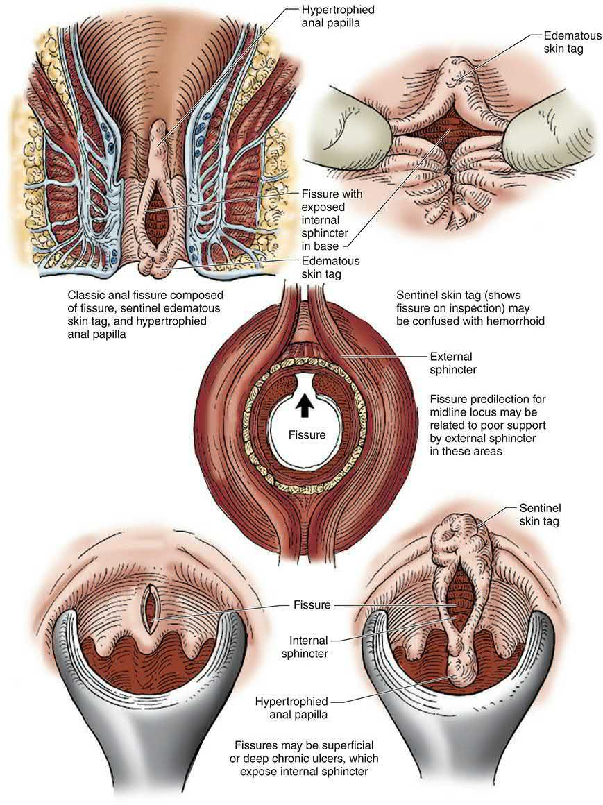
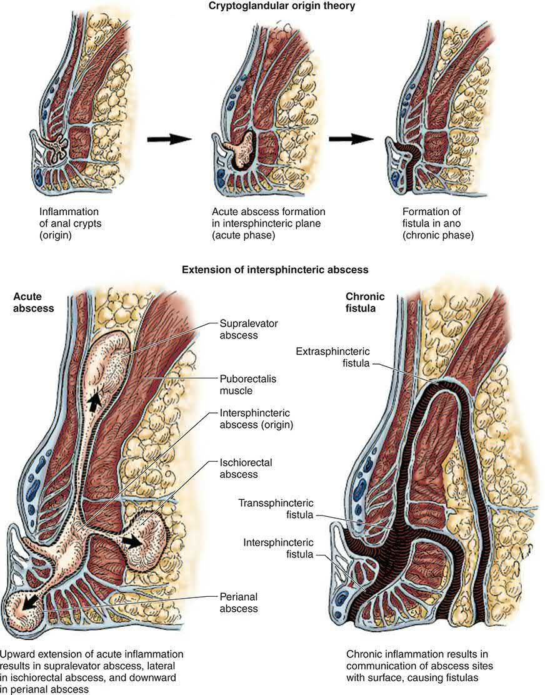
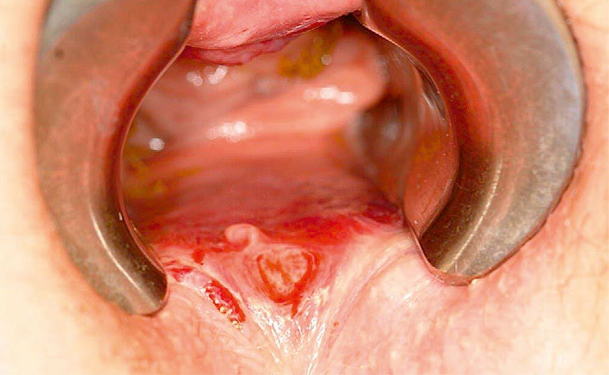
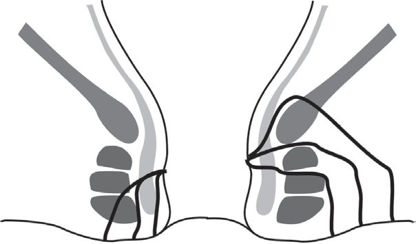
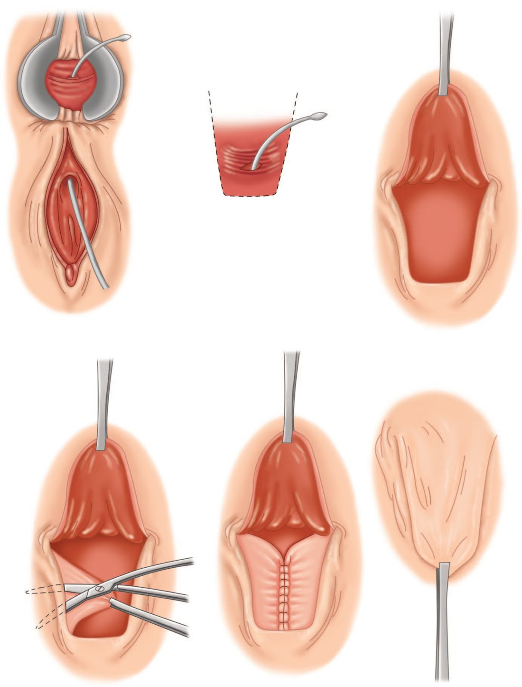

Anal Fissure and Fistula
Summary
Anal fissure (fissure-in-ano) is a longitudinal tear in the anoderm of the distal anal canal causing severe pain on defecation, usually in the posterior midline, and is treated first with sphincter-relaxing agents and, if these fail, lateral internal sphincterotomy [1]. Fistula-in-ano is a chronic abnormal track between the anorectal lumen and the perianal skin, most often arising from cryptoglandular infection, classified by its course relative to the sphincter complex (Parks' classification) and managed with fistulotomy for simple tracks or staged/sphincter-sparing techniques for complex tracks to balance cure against continence [1].
Definition
An anal fissure is a longitudinal ulcer in the anoderm of the distal anal canal, extending from the anal verge proximally towards, but not beyond, the dentate line [1]. A fistula-in-ano is a chronic abnormal communication extending from the anorectal lumen (internal opening) to an external opening on the perineal or buttock skin, or rarely to the vagina [1].
Pathophysiology
Anal fissure: the posterior midline is affected in about 90% of cases, possibly related to shearing forces at defecation combined with a less elastic anoderm and increased longitudinal muscle density at that site; anterior fissures are more common in women, sometimes following vaginal delivery [1][2]. Affected patients frequently show internal anal sphincter hypertonia, which increases the traumatic effect of hard stool and perpetuates relative ischaemia, reducing mucosal blood supply; pain increases sphincter spasm, which worsens stool hardness and ischaemia in a vicious cycle, producing chronic deep fissures with a hypertrophied anal papilla internally and a sentinel skin tag externally [1].

Fistula-in-ano: the majority are idiopathic/cryptoglandular, arising from infection in an intersphincteric anal gland that tracks outward, often first presenting as a perianal abscess (cryptoglandular theory) [1][4]. Anal fistulae may also be associated with Crohn's disease, tuberculosis, lymphogranuloma venereum, actinomycosis, rectal duplication, foreign body, or (rarely) malignancy [1]. Parks' classification, based on the primary track's relation to the external sphincter, defines: intersphincteric (45%, do not cross the external sphincter), trans-sphincteric (40%, cross both sphincters through the ischiorectal fossa, may have secondary/horseshoe extensions), suprasphincteric (10%, curl above puborectalis, often iatrogenic from over-vigorous probing) and extrasphincteric (5%, unrelated to the sphincters, usually from pelvic disease or trauma) [1].

Clinical features
- Anal fissure: acute fissures cause severe anal pain during defecation ("passing glass," "a knife cutting"), recurring at each evacuation, with a trace of fresh blood on the paper; chronic fissures show a hypertrophied anal papilla, sentinel tag, and an indurated ulcer exposing internal sphincter fibres, with itching, discharge, or discharge from an associated intersphincteric fistula [1].
- A fissure that is not midline, or has atypical features, should raise suspicion of Crohn's disease, tuberculosis, syphilis, HIV-related ulceration or squamous cell carcinoma, and warrants examination under anaesthesia with biopsy [1].
- Acute severe "knife-like" pain during defecation with deep throbbing afterward (pelvic floor spasm), and blood on the paper, is the classic acute presentation [5].
Fistula-in-ano: intermittent purulent (occasionally bloody) discharge and discomfort relieved temporarily by discharge of pus, often with a preceding history of anorectal sepsis; passage of flatus/faeces through the external opening suggests a rectal rather than anal internal opening [1]. Presentation may be as an acute perianal abscess (rapid-onset severe pain, swelling, erythema, fever), recurrent perianal sepsis (pressure sensation with intermittent discharge), or chronic low-grade discharge via a punctum [4].
Etiology
- Anal fissures are associated with straining and constipation, and with childbirth (anterior fissures in women) [1].
- Fistula-in-ano most commonly follows cryptoglandular sepsis (often presenting first as a perianal abscess); around 30% of anorectal abscesses eventually develop a fistula-in-ano [2].
- Crohn's disease is an important secondary cause of both conditions, producing atypical, often multiple or laterally sited fissures, and complex fistulae [6].

Diagnosis
Fissure: usually a clinical diagnosis on inspection; if examination cannot be adequately performed in clinic, examination under anaesthesia with biopsy/culture is required to exclude secondary causes [1]. Fistula: clinical assessment aims to determine the internal opening site, external opening site(s), the course of the primary track, secondary extensions, and any complicating conditions; Goodsall's rule predicts the internal opening's likely position from the external opening, though most internal openings are in fact midline [1][2]. Dilute hydrogen peroxide via the external opening, gentle probing, endoanal ultrasound (EAUS) and MRI (the "gold standard," particularly with STIR sequencing) are used to define the tract and detect secondary extensions, informing surgical strategy [1].
Scoring and Severity
Fistulae are classified by the Parks' classification (intersphincteric, trans-sphincteric, suprasphincteric, extrasphincteric) as above, condensed clinically by the American Gastroenterology Association classification into: simple fistula (low inter-/trans-sphincteric tract, single external opening) versus complex fistula (high inter-/trans-sphincteric tract, extra-/suprasphincteric tract, presence of abscess/collection, ano-vaginal fistula, or anal stricture), this distinction guides whether a fistula can be managed by straightforward fistulotomy or requires specialist, sphincter-sparing management [1].

Treatment and Management
Anal fissure: conservative management heals almost all acute and most chronic fissures, dietary fibre, stool softeners, adequate fluids, warm baths, and topical local anaesthetics; first-line "chemical sphincterotomy" uses topical glyceryl trinitrate (GTN 0.2%, nitric oxide donor) or diltiazem (2%, calcium-channel antagonist) to relax the internal sphincter, with roughly 50% cure and GTN limited by headache; botulinum toxin injection (10–100 units) is a further option, with temporary incontinence in up to 10% [1][2]. Incontinence following botulinum injection is a contraindication to subsequent sphincterotomy [2].
Fistula-in-ano: antibiotics reduce symptoms from sepsis but cannot cure the fistula; medical treatment of underlying Crohn's disease can markedly improve fistulating symptoms [1]. Patients with minimal symptoms may be managed expectantly [1].
Surgeries
Anal fissure: lateral internal sphincterotomy (division of the internal sphincter away from the fissure itself (open or closed technique)) gives healing rates around 85% but with a risk of altered continence (9% flatus incontinence, 6% soiling, <1% solid incontinence); contraindications include Crohn's disease, ulcerative colitis, women of childbearing age, prior obstetric injury, prior incontinence, or sphincter dysfunction [1][2]. Fissurectomy (excision of the fibrotic edge, sentinel tag and papilla) is an alternative where sphincterotomy is contraindicated, often combined with an anal advancement flap, particularly in postpartum women or those with low resting pressures [1].
Fistula-in-ano:
- Fistulotomy: laying the track open to heal by secondary intention; used for intersphincteric fistulae and low trans-sphincteric fistulae involving less than about 30% of the external sphincter (avoided for anterior fistulae in women); the most important determinant of postoperative continence is the amount of muscle left behind, not divided (a minimum ~2 cm of external sphincter is usually preserved) [1].
- Fistulectomy: coring out the tract with diathermy, giving better anatomical definition than fistulotomy at the cost of longer healing.
- Setons: loose (non-cutting) setons drain sepsis and allow staged fistulotomy or long-term palliation (especially in Crohn's disease); cutting setons gradually divide enclosed muscle ("cheese-wiring") to achieve eradication with less abrupt sphincter division.
- Sphincter-sparing techniques for high/complex fistulae: ligation of the intersphincteric fistula tract (LIFT), and endorectal/anorectal advancement flap; fistula plugs and fibrin glue are generally avoided due to poor results [1][2].
- Perianal/anorectal abscess is treated by prompt incision and drainage, which may be the first presentation of an underlying fistula [2].

Complications
- Fissure surgery risks fecal incontinence (the most serious complication of sphincterotomy, though the risk is small), haematoma, perianal abscess and recurrent/secondary fistula [1][2].
- The most feared complication of fistula surgery is impaired continence from excessive or inappropriate division of the sphincter complex, which is why fistulotomy is avoided for fistulae involving more than the lower quarter of the external sphincter [2].
- Persistence or recurrence of a fistula usually reflects a missed secondary (often horseshoe) extension [1].
Prognosis
Lateral internal sphincterotomy achieves healing in the great majority (~85%) of chronic fissures, with better long-term results than medical therapy alone, at a small risk to continence [1]. Fistula recurrence and functional outcome depend heavily on fistula complexity and chosen technique; comparative trial data on individual techniques are heterogeneous. Not covered in source textbooks for a unified prognostic scoring system beyond these outcome statements.
References
- Bailey & Love's Short Practice of Surgery, 28th ed., Ch. 80 The anus and anal canal
- The ABSITE Review, 2022, Anorectal Disorders
- Maingot's Abdominal Operations, 13th ed., Ch. 52
- Oxford Handbook of Clinical Surgery, 5th ed., Ch. 12 Colorectal surgery
- Oxford Handbook of Clinical Surgery, 5th ed., Ch. 26
- Bailey & Love's Short Practice of Surgery, 28th ed., Ch. 75 Inflammatory bowel disease and Ch. 80
- Sabiston Textbook of Surgery, 22nd ed., Ch. 97
- Schwartz's Principles of Surgery: ABSITE and Board Review, Ch. 29